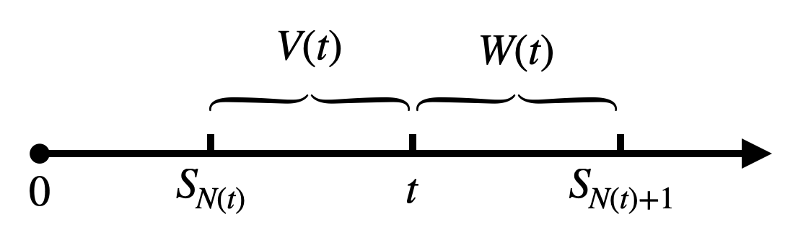

[随机过程]3·Poisson过程
\[ \newcommand{\coloneqq}{\mathrel{\mathrel{\vcenter{:}}=}} \]
基本概念及 Poisson 过程的一维分布
独立增量过程：设 \(\{X(t),t\in T\}\) 是一随机过程，若对于任意 \(t_1<t_2<\cdots<t_n\)，有随机过程 \(X(t)\) 的增量： \[ X(t_2)-X(t_1),\ldots, X(t_n)-X(t_{n-1}) \] 相互独立，则称随机过程 \(\{X(t),t\in T\}\) 是独立增量过程。
注：设独立增量过程的参数集 \(T=[a,b),\,a>-\infty\)，当初值给定时（一般假定 \(X(a)=0\)），独立增量过程是一个 Markov 过程。
计数过程：在 \([0,t)\) 内出现随机事件 \(A\) 的总数组成的过程 \(\{N(t),t\geq 0\}\) 称为计数过程。计数过程满足：
- \(N(t)\geq 0\)；
- \(N(t)\in N_0=\{0,1,2,\ldots\}\)；
- \(\forall s,t>0,\,s<t\)，有 \(N(s)\leq N(t)\)；
- \(\forall s,t>0,\,s<t\)，\(N(t)-N(s)\) 表示在时间间隔 \([s,t)\) 内事件 \(A\) 出现的次数。
独立增量计数过程：若计数过程在不相交的时间间隔内事件 \(A\) 出现的次数是相互独立的，则称此计数过程为独立增量计数过程。
平稳增量计数过程：若计数过程在时间间隔 \([t,t + s)\) 内出现事件 \(A\) 的次数只与时间差 \(s\) 有关，而与起始时间 \(t\) 无关，则称此计数过程为平稳增量计数过程。
Poisson 过程：定义计数过程 \({N(t), t\leq 0}\) 称为时齐（齐次）Poisson 过程，若满足:
\(N(0)=0\)；
是独立增量计数过程，即任取 \(0<t_1<t_2<\cdots<t_n,n\in\mathbb N\)， \[ N(t_1),N(t_2)-N(t_1),\ldots,N(t_n)-N(t_{n-1}) \] 相互独立；
是平稳增量计数过程： \[ \forall s,t>0,\,n\geq 0,\,P\{N(s+t)-N(t)=n\}=P\{N(s)=n\} \]
增量是泊松的，即对任意 \(t>0\) 和充分小的 \(\Delta t>0\)，有： \[ \begin{align} &P\{N(t+\Delta t)-N(t)=1\}=\lambda\Delta t+o(\Delta t)\\ &P\{N(t+\Delta t)-N(t)\geq 2\}=o(\Delta t)\\ \end{align} \] 其中 \(\lambda>0\) 称为强度系数。
定理（Poisson 过程的一维分布）：若 \(\{N(t),t\geq 0\}\) 是时齐 Poisson 过程，则 \(\forall s,t>0\)，有： \[ P\{N(s+t)-N(s)=k\}=P\{N(t)=k\}=\frac{(\lambda t)^k}{k!}e^{-\lambda t},\quad k\in \mathbb N \] 即 \(N(s+t)-N(s)\) 是一个参数为 \(\lambda t\) 的 Poisson 分布。
Poisson 过程与指数分布的关系
\(S_n\) 与 \(X_n\)
定义：设 \(\{N(t), t\geq 0\}\) 是一计数过程，记：
- \(S_n\) 表示第 \(n\) 个事件发生的时间，其中 \(S_0=0\).
- \(X_n=S_n-S_{n-1}\) 表示第 \(n-1\) 个事件与第 \(n\) 个事件发生的时间间隔。
基本关系式： \[ \begin{align} &\{N(t)\geq n\}=\{S_n\leq t\}\\ &\{N(t)=n\}=\{S_n\leq t<S_{n+1}\}=\{S_n\leq t\}-\{S_{n+1}\leq t\} \end{align} \]
非常重要的两个关系式！
若 \(\{N(t),t\geq0\}\) 是 Poisson 过程，则 \(S_n\) 的分布函数为： \[ F_{\small S_n}(t)=P\{S_n\leq t\}=P\{N(t)\geq n\}=1-P\{N(t)<n\}=1-e^{-\lambda t}\sum_{k=0}^{n-1}\frac{(\lambda t)^k}{k!} \] 概率密度函数为： \[ f_{\small S_n}(t)=\frac{\mathrm d F_{\small S_n}(t)}{\mathrm dt}=\frac{\lambda(\lambda t)^{n-1}}{(n-1)!}e^{-\lambda t},\quad t\geq0 \] 即 \(S_n\sim \Gamma(n,\lambda^{-1})\). 特别地，当 \(n=1\) 时，有： \[ P\{X_1\leq t\}=P\{S_1\leq t\}=1-e^{-\lambda t},\quad t\geq 0 \] 即 \(X_1\sim \text{Ex}(\lambda)\) 是参数为 \(\lambda\) 的指数分布（负指数分布）。
自然引出一个问题：\(X_2,\ldots,X_n\) 是否还是服从参数为 \(\lambda\) 的指数分布？是否独立？
前置知识：求概率密度的微元法
一维情形：若随机变量 \(X\) 的概率密度 \(f(x)\) 在 \(x\) 处连续，则： \[ f(x)=\lim_{h\to 0}\frac{P(x< X\leq x+h)}{h}\implies P(x<X\leq x+h)=f(x)h+o(h) \] 多维情形：若随机向量 \((X_1,\ldots,X_n)\) 的概率密度 \(f(x_1,\ldots,x_n)\) 在点 \((x_1,\ldots,x_n)\) 处连续，则： \[ f(x_1,\ldots,x_n)=\lim_{h_1,\ldots,h_n\to0}\frac{P(x_1<X_1\leq x_1+h_1,\ldots,x_n<X_n\leq x_n+h_n)}{h_1\cdots h_n} \] 即： \[ P(x_1<X_1\leq x_1+h_1,\ldots,x_n<X_n\leq x_n+h_n)=f(x_1,\ldots,x_n)h_1\cdots h_n+o(h_1\cdots h_n) \]
前置知识：顺序统计量的分布
顺序统计量：给定 \((\Omega,\Sigma,P)\)，\((X_1,X_2,\ldots,X_n)\) 为其上的随机向量，\(\forall \omega\in\Omega\)，将试验结果 \(X_1(\omega),X_2(\omega),\ldots,X_n(\omega)\) 按从小到大顺序重新进行排列，记为 \(X_{(1)}(\omega)\leq X_{(2)}(\omega)\leq\ldots\leq X_{(n)}(\omega)\)，称 \((X_{(1)},X_{(2)},\ldots,X_{(n)})\) 为 \((X_1,X_2,\ldots,X_n)\) 的顺序统计量。
设 \(X_1,X_2,\ldots,X_n\) 是独立同分布非负随机变量，密度函数为 \(f(x)\)，\(X_{(1)},X_{(2)},\ldots,X_{(n)}\) 为相应顺序统计量，则利用微元法可以计算顺序统计量的概率密度函数为： \[ f(x_1,x_2,\ldots,x_n)=\begin{cases} \displaystyle n!\prod_{i=1}^nf(x_i),&0<x_1<x_2<\cdots<x_n\\ 0,&\text{otherwise} \end{cases} \]
Poisson 过程与指数分布
定理：计数过程 \(\{N(t),t\geq 0\}\) 是强度为 \(\lambda\) 的时齐 Poisson 过程的充要条件是 \(\{X_n,n\geq 1\}\) 是独立且参数同为 \(\lambda\) 的指数分布。
此定理的结论非常重要，它反映了 Poisson 过程的本质特性，也为 Poisson 过程的计算机模拟提供了理论基础。
剩余寿命与年龄
设 \(N(t)\) 为在 \([0,t)\) 内事件 A 发生的个数，\(S_n\) 表示第 \(n\) 个事件发生的时刻，\(S_{N(t)}\) 表示在 \(t\) 时刻前最后一个事件发生的时刻，\(S_{N(t)+1}\) 表示在 \(t\) 时刻后首次事件发生的时刻，令： \[ \begin{align} &W(t)=S_{N(t)+1}-t\\ &V(t)=t-S_{N(t)} \end{align} \] 称 \(W(t)\) 为事件 A 的剩余寿命或剩余时间，\(V(t)\) 为事件 A 的年龄。

定理：设 \(\{N(t),t\geq 0\}\) 是参数为 \(\lambda\) 的时齐 Poisson 过程，则有：
\(W(t)\) 与 \(\{X_n,n\geq 1\}\) 同分布，即： \[ P\{W(t)\leq x\}=1-e^{-\lambda x},\quad x\geq 0 \]
\(V(t)\) 为截尾的指数分布，即： \[ P\{V(t)\leq x\}=\begin{cases}1-e^{-\lambda x},&0\leq x<t\\1,&t\leq x\end{cases} \]
定理：若 \(\{X_n,n\geq 1\}\) 独立同分布，又对 \(\forall t\geq 0\)，\(W(t)\) 与 \(X_n (n\geq 1)\) 同分布，分布函数为 \(F(x)\)，且 \(F(0)=0\)，则 \(\{N(t), t\geq 0\}\) 为 Poisson 过程。
注意：\(X_n=S_n-S_{n-1}\) 表示第 \(n-1\) 个事件的寿命。
到达时间的条件分布
下面讨论在条件 \(N(t)=n\) 下，\(S_1,S_2,\ldots,S_n\) 的条件分布问题。
定理：设 \(\{N(t),t\geq 0\}\) 为时齐 Poisson 过程，则对 \(\forall 0<s<t\)，有： \[ P\{X_1\leq s\vert N(t)=1\}=\frac{s}{t} \] 即 \(X_1\) 在 \(N(t)=1\) 的条件下服从 \(U(0,t)\).
定理：设 \(\{N(t),t\geq 0\}\) 为时齐 Poisson 过程，则在已知条件 \(N(t)=n\) 下，事件相继发生的时间 \(S_1,S_2,\ldots,S_n\) 的条件概率密度为： \[ f(t_1,t_2,\ldots,t_n)=\begin{cases}\displaystyle\frac{n!}{t^n},&0<t_1<t_2<\ldots<t_n\leq t\\0,&\text{otherwise}\end{cases} \]
本定理说明，在 \(N(t)=n\) 的条件下，事件相继发生的时间 \(S_1,S_2,\ldots,S_n\) 的条件分布与 \(n\) 个在 \([0,t]\) 上相互独立同均匀分布的顺序统计量的分布函数一样。
定理：设 \(\{N(t),t\geq0\}\) 为计数过程，\(\{X_n,n\geq1\}\) 独立同分布，若 \(F_{X_n}(0)=0\) 且对 \(\forall 0<s<t\)，有： \[ P\{X_1\leq s\vert N(t)=1\}=\frac{s}{t},\quad t>0 \] 则 \(\{N(t),t\geq 0\}\) 为 Poisson 过程。
定理：设 \(\{N(t), t\geq0\}\) 为计数过程，\(\{X_n,n\geq1\}\) 独立同分布，若 \(\mathbb E[X_n]<\infty,\,F_{X_n}(0)=0\)，且对 \(\forall 0<s<t\)，有： \[ P\{S_n\leq s\vert N(t)=n\}=\left(\frac{s}{t}\right)^n,\quad t>0 \] 则 \(\{N(t),t\geq0\}\) 为 Poisson 过程。
这两个定理相当于前两个定理反过来，用来验证一个计数过程是否是 Poisson 过程。
更新过程
暂略。